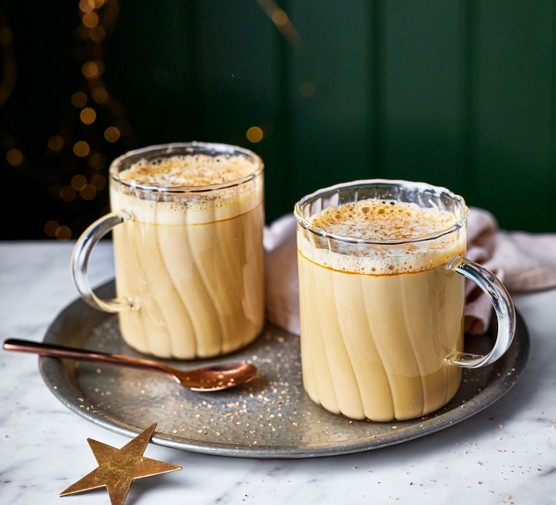

Eggnog Latte

Warm up during winter months with a mug of creamy eggnog latte, made with eggnog or Advocaat, milk, espresso and a pinch of nutmeg for dusting
Ingredients
- 100ml eggnog or Advocaat
- 100ml milk
- 50ml espresso, hot and freshly made
- Small pinch of grated nutmeg
Steps
- Gently heat together the milk and eggnog until just simmering (being careful not to boil).
- Whisk until frothy or use a milk frother.
- Pour the espresso into a large mug or heatproof glass, followed by the eggnog/milk mixture.
- Serve dusted with a little nutmeg.